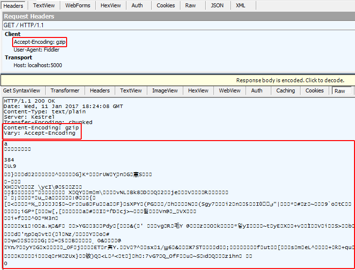
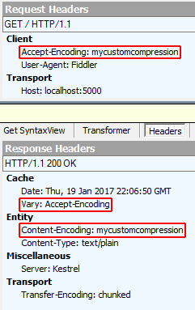

Response Compression Middleware for ASP.NET Core
By Luke Latham
Network bandwidth is a limited resource. Reducing the size of the response usually increases the responsiveness of an app, often dramatically. One way to reduce payload sizes is to compress an app's responses.
When to use Response Compression Middleware
Use server-based response compression technologies in IIS, Apache, or Nginx where the performance of the middleware probably won't match that of the server modules. Use Response Compression Middleware when you're unable to use:
- IIS Dynamic Compression module
- Apache mod_deflate module
- NGINX Compression and Decompression
- HTTP.sys server (formerly called WebListener)
- Kestrel
Response compression
Usually, any response not natively compressed can benefit from response compression. Responses not natively compressed typically include: CSS, JavaScript, HTML, XML, and JSON. You shouldn't compress natively compressed assets, such as PNG files. If you attempt to further compress a natively compressed response, any small additional reduction in size and transmission time will likely be overshadowed by the time it took to process the compression. Don't compress files smaller than about 150-1000 bytes (depending on the file's content and the efficiency of compression). The overhead of compressing small files may produce a compressed file larger than the uncompressed file.
When a client can process compressed content, the client must inform the server of its capabilities by sending the Accept-Encoding header with the request. When a server sends compressed content, it must include information in the Content-Encoding header on how the compressed response is encoded. Content encoding designations supported by the middleware are shown in the following table.
Accept-Encoding header values |
Middleware Supported | Description |
|---|---|---|
br |
No | Brotli Compressed Data Format |
compress |
No | UNIX "compress" data format |
deflate |
No | "deflate" compressed data inside the "zlib" data format |
exi |
No | W3C Efficient XML Interchange |
gzip |
Yes (default) | gzip file format |
identity |
Yes | "No encoding" identifier: The response must not be encoded. |
pack200-gzip |
No | Network Transfer Format for Java Archives |
* |
Yes | Any available content encoding not explicitly requested |
For more information, see the IANA Official Content Coding List.
The middleware allows you to add additional compression providers for custom Accept-Encoding header values. For more information, see Custom Providers below.
The middleware is capable of reacting to quality value (qvalue, q) weighting when sent by the client to prioritize compression schemes. For more information, see RFC 7231: Accept-Encoding.
Compression algorithms are subject to a tradeoff between compression speed and the effectiveness of the compression. Effectiveness in this context refers to the size of the output after compression. The smallest size is achieved by the most optimal compression.
The headers involved in requesting, sending, caching, and receiving compressed content are described in the table below.
| Header | Role |
|---|---|
Accept-Encoding |
Sent from the client to the server to indicate the content encoding schemes acceptable to the client. |
Content-Encoding |
Sent from the server to the client to indicate the encoding of the content in the payload. |
Content-Length |
When compression occurs, the Content-Length header is removed, since the body content changes when the response is compressed. |
Content-MD5 |
When compression occurs, the Content-MD5 header is removed, since the body content has changed and the hash is no longer valid. |
Content-Type |
Specifies the MIME type of the content. Every response should specify its Content-Type. The middleware checks this value to determine if the response should be compressed. The middleware specifies a set of default MIME types that it can encode, but you can replace or add MIME types. |
Vary |
When sent by the server with a value of Accept-Encoding to clients and proxies, the Vary header indicates to the client or proxy that it should cache (vary) responses based on the value of the Accept-Encoding header of the request. The result of returning content with the Vary: Accept-Encoding header is that both compressed and uncompressed responses are cached separately. |
You can explore the features of the Response Compression Middleware with the sample app. The sample illustrates:
- The compression of app responses using gzip and custom compression providers.
- How to add a MIME type to the default list of MIME types for compression.
Package
To include the middleware in your project, add a reference to the Microsoft.AspNetCore.ResponseCompression package or use the Microsoft.AspNetCore.All package. This feature is available for apps that target ASP.NET Core 1.1 or later.
Configuration
The following code shows how to enable the Response Compression Middleware with the with the default gzip compression and for default MIME types.
WebHost.CreateDefaultBuilder(args)
.ConfigureServices(services =>
{
services.AddResponseCompression();
})
.Configure(app =>
{
app.UseResponseCompression();
app.Run(async context =>
{
context.Response.ContentType = "text/plain";
await context.Response.WriteAsync(LoremIpsum.Text);
});
})
.Build();
Note
Use a tool like Fiddler, Firebug, or Postman to set the Accept-Encoding request header and study the response headers, size, and body.
Submit a request to the sample app without the Accept-Encoding header and observe that the response is uncompressed. The Content-Encoding and Vary headers aren't present on the response.

Submit a request to the sample app with the Accept-Encoding: gzip header and observe that the response is compressed. The Content-Encoding and Vary headers are present on the response.

Providers
GzipCompressionProvider
Use the GzipCompressionProvider to compress responses with gzip. This is the default compression provider if none are specified. You can set the compression level with the GzipCompressionProviderOptions.
The gzip compression provider defaults to the fastest compression level (CompressionLevel.Fastest), which might not produce the most efficient compression. If the most efficient compression is desired, you can configure the middleware for optimal compression.
| Compression Level | Description |
|---|---|
CompressionLevel.Fastest |
Compression should complete as quickly as possible, even if the resulting output is not optimally compressed. |
CompressionLevel.NoCompression |
No compression should be performed. |
CompressionLevel.Optimal |
Responses should be optimally compressed, even if the compression takes more time to complete. |
services.AddResponseCompression(options =>
{
options.Providers.Add<GzipCompressionProvider>();
options.Providers.Add<CustomCompressionProvider>();
options.MimeTypes = ResponseCompressionDefaults.MimeTypes.Concat(new[] { "image/svg+xml" });
});
services.Configure<GzipCompressionProviderOptions>(options =>
{
options.Level = CompressionLevel.Fastest;
});
MIME types
The middleware specifies a default set of MIME types for compression:
text/plaintext/cssapplication/javascripttext/htmlapplication/xmltext/xmlapplication/jsontext/json
You can replace or append MIME types with the Response Compression Middleware options. Note that wildcard MIME types, such as text/* aren't supported. The sample app adds a MIME type for image/svg+xml and compresses and serves the ASP.NET Core banner image (banner.svg).
services.AddResponseCompression(options =>
{
options.Providers.Add<GzipCompressionProvider>();
options.Providers.Add<CustomCompressionProvider>();
options.MimeTypes = ResponseCompressionDefaults.MimeTypes.Concat(new[] { "image/svg+xml" });
});
services.Configure<GzipCompressionProviderOptions>(options =>
{
options.Level = CompressionLevel.Fastest;
});
Custom providers
You can create custom compression implementations with ICompressionProvider. The EncodingName represents the content encoding that this ICompressionProvider produces. The middleware uses this information to choose the provider based on the list specified in the Accept-Encoding header of the request.
Using the sample app, the client submits a request with the Accept-Encoding: mycustomcompression header. The middleware uses the custom compression implementation and returns the response with a Content-Encoding: mycustomcompression header. The client must be able to decompress the custom encoding in order for a custom compression implementation to work.
services.AddResponseCompression(options =>
{
options.Providers.Add<GzipCompressionProvider>();
options.Providers.Add<CustomCompressionProvider>();
options.MimeTypes = ResponseCompressionDefaults.MimeTypes.Concat(new[] { "image/svg+xml" });
});
services.Configure<GzipCompressionProviderOptions>(options =>
{
options.Level = CompressionLevel.Fastest;
});
public class CustomCompressionProvider : ICompressionProvider
{
public string EncodingName => "mycustomcompression";
public bool SupportsFlush => true;
public Stream CreateStream(Stream outputStream)
{
// Create a custom compression stream wrapper here
return outputStream;
}
}
Submit a request to the sample app with the Accept-Encoding: mycustomcompression header and observe the response headers. The Vary and Content-Encoding headers are present on the response. The response body (not shown) isn't compressed by the sample. There isn't a compression implementation in the CustomCompressionProvider class of the sample. However, the sample shows where you would implement such a compression algorithm.

Compression with secure protocol
Compressed responses over secure connections can be controlled with the EnableForHttps option, which is disabled by default. Using compression with dynamically generated pages can lead to security problems such as the CRIME and BREACH attacks.
Adding the Vary header
When compressing responses based on the Accept-Encoding header, there are potentially multiple compressed versions of the response and an uncompressed version. In order to instruct client and proxy caches that multiple versions exist and should be stored, the Vary header is added with an Accept-Encoding value. In ASP.NET Core 1.x, adding the Vary header to the response is accomplished manually. In ASP.NET Core 2.x, the middleware adds the Vary header automatically when the response is compressed.
ASP.NET Core 1.x only
// ONLY REQUIRED FOR ASP.NET CORE 1.x APPS
private void ManageVaryHeader(HttpContext context)
{
// If the Accept-Encoding header is present, add the Vary header
var accept = context.Request.Headers[HeaderNames.AcceptEncoding];
if (!StringValues.IsNullOrEmpty(accept))
{
context.Response.Headers.Append(HeaderNames.Vary, HeaderNames.AcceptEncoding);
}
}
Middlware issue when behind an Nginx reverse-proxy
When a request is proxied by Nginx, the Accept-Encoding header is removed. This prevents the middleware from compressing the response. For more information, see NGINX: Compression and Decompression. This issue is tracked by Figure out pass-through compression for nginx (BasicMiddleware #123).
Working with IIS dynamic compression
If you have an active IIS Dynamic Compression Module configured at the server level that you would like to disable for an app, you can do so with an addition to your web.config file. For more information, see Disabling IIS modules.
Troubleshooting
Use a tool like Fiddler, Firebug, or Postman, which allow you to set the Accept-Encoding request header and study the response headers, size, and body. The Response Compression Middleware compresses responses that meet the following conditions:
- The
Accept-Encodingheader is present with a value ofgzip,*, or custom encoding that matches a custom compression provider that you've established. The value must not beidentityor have a quality value (qvalue,q) setting of 0 (zero). - The MIME type (
Content-Type) must be set and must match a MIME type configured on theResponseCompressionOptions. - The request must not include the
Content-Rangeheader. - The request must use insecure protocol (http), unless secure protocol (https) is configured in the Response Compression Middleware options. Note the danger described above when enabling secure content compression.